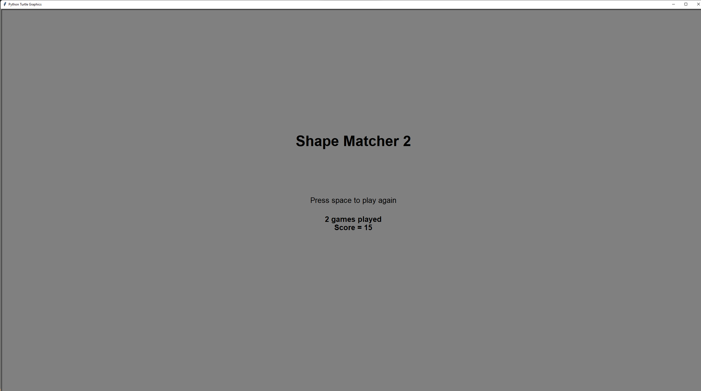
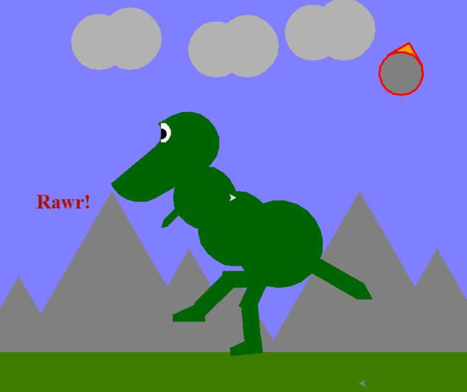
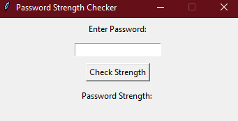
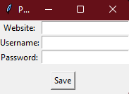
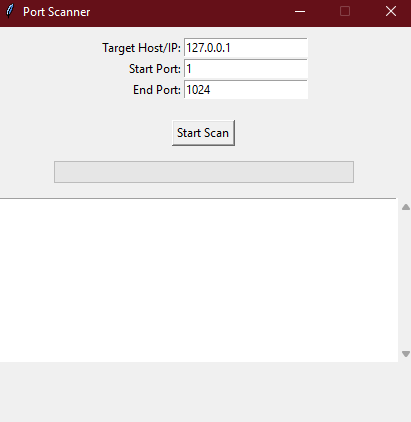
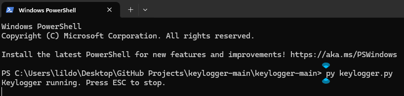
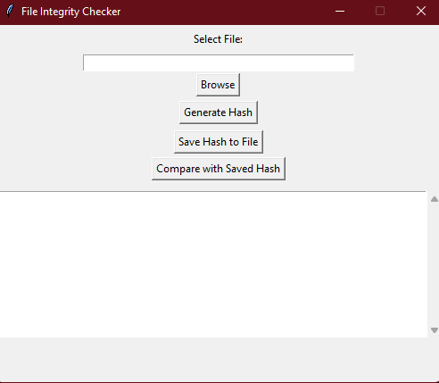
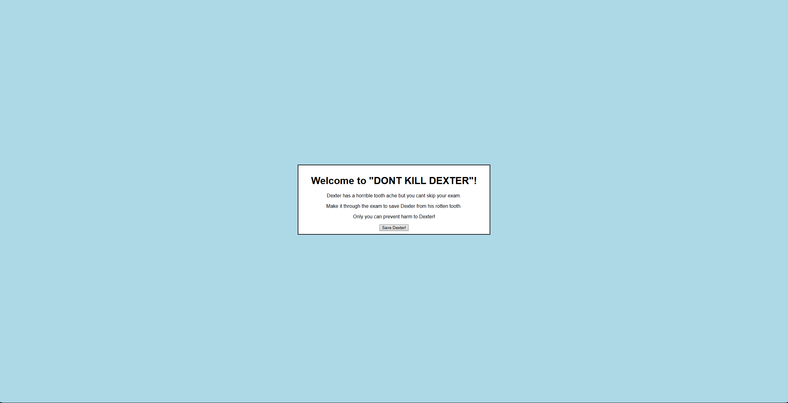

Shape Matcher 2

During my senior year of high school, I enrolled in the AP Computer Science Principles course, where I developed an educational game using Python and the Turtle graphics library. The project was designed to demonstrate my understanding of functions, parameters, iterations, and conditional statements. The game focuses on polygons, helping users learn the names and properties of shapes ranging from triangles to decagons. This project not only deepened my programming skills but also played a role in my success on the AP exam. I plan to revisit and enhance this project, applying the advanced knowledge and skills I have acquired since then.
Winston

In my AP Computer Science Principles class, I created a project using Python's Turtle graphics library to design an illustration of a dinosaur. This project showcased my ability to break down complex shapes into smaller components and use functions, loops, and coordinates to build intricate designs. Through this exercise, I honed my problem-solving and creative skills while gaining a deeper understanding of graphical programming. The experience reinforced my interest in blending artistic creativity with computational logic, and it remains one of my favorite early programming accomplishments.
Bobcat Swap&Shop
As part of my Environmental Humanities English class, I contributed to the creation of a website for a class-hosted thrift shop focused on promoting sustainability and upcycling. The shop offered upcycled clothing to encourage environmentally conscious practices within our community. My role involved designing and building the website, which provided information about the event and highly the importance of sustainable fashion. This project allowed me to apply my technical skills to a real-world initiative, while also fostering teamwork and raising awareness about sustainability. It was a meaningful experience that combined creativity, technology, and environmental advocacy.
Portfolio
My portfolio is a dynamic, self-programmed platform designed to showcase my technical skills, creativity, and diverse projects. Built using modern web development tools, it highlights my proficiency in coding, design, and problem-solving. The portfolio features a curated selection of my work, including programming projects, collaborative efforts, and creative designs, with detailed descriptions of each to provide context and insight into my contributions. This platform not only serves as a testament to my technical abilities but also reflects my commitment to continuous learning and growth in the field of technology and design.
Password Strength Checker

A beginner-friendly Python tool that evaluates the strength of user-entered passwords. It checks for common weaknesses like short length, lack of special characters, and dictionary words, providing real-time feedback to help users create more secure passwords.
Password Manager

A lightweight graphical password manager built with Python and Tkinter. Users can securely store and organize website credentials, including the site name, username, and password. Designed with simplicity in mind, it offers an intuitive interface for managing personal login data without needing complex features.
Port Scanner

A lightweight Python-based port scanner that identifies open ports on a target device. It offers a simple interface for users to input IP addresses and returns a list of active ports, aiding in basic network diagnostics and security assessments.
Keylogger

A basic Python keylogger created for cybersecurity education. It records keystrokes and saves them to a local file, demonstrating how logging software works in a controlled, ethical context. Ideal for learning about system vulnerabilities and the importance of proactive digital security.
File Integrity Checker

This tool computes and compares file hashes to ensure data integrity. By generating checksums and verifying them against known values, it helps detect unauthorized changes or corruption in critical files.
Radiation Game

An interactive educational game developed using HTML, CSS, and JavaScript to teach dental students about radiation. The game explores topics like the history of X-rays and radiation safety in dentistry through engaging lessons and quizzes, blending fun with foundational knowledge in the field.